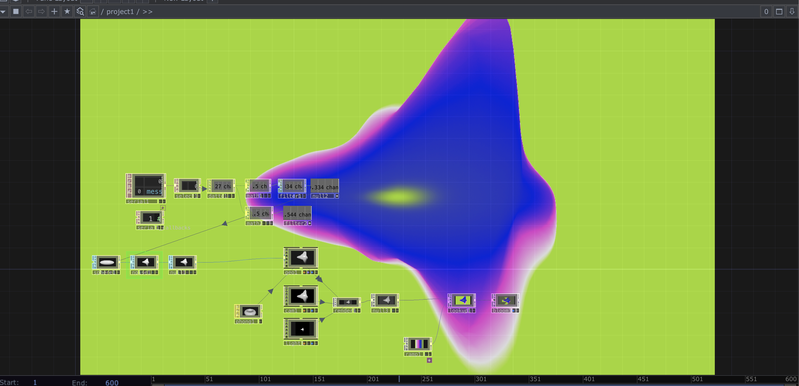
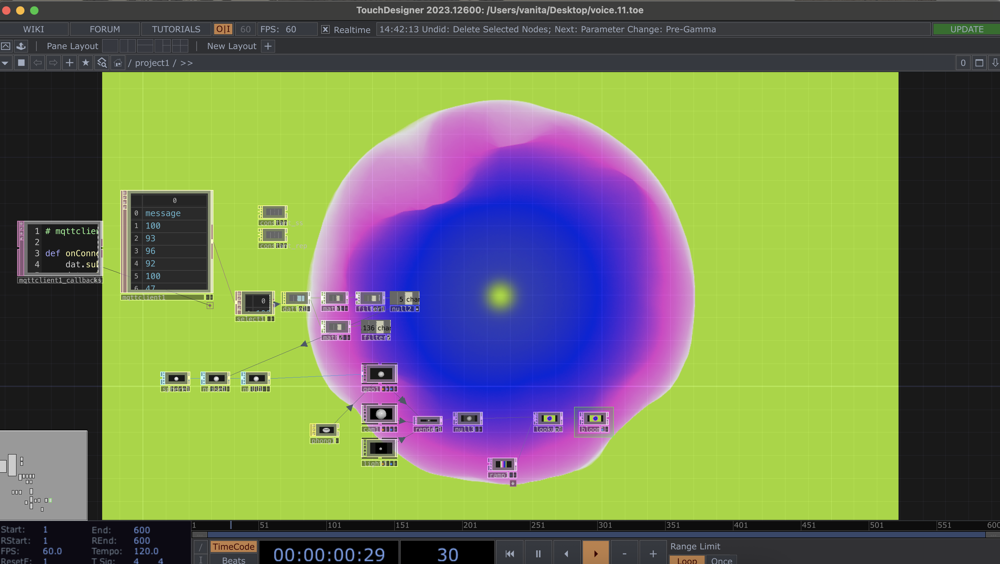

¿Cómo presenciamos el habitar de los espacios a través del sonido?
Acu-Visual observa en vivo las huellas sonoras que dejan las personas al ocupar un lugar: conversaciones, pasos, risas, silencios. Esa identidad acústica cambiante habla de cómo se vive y se comparte un espacio, y se convierte en la materia prima de visualizaciones experimentales hechas en TouchDesigner.
Dos micrófonos conectados a Raspberry Pi Pico 2W escuchan dos sectores del mismo edificio de la Facultad de Artes, Arquitectura y Diseño de la UDP: el Pañol y el Laboratorio de Interacción Digital. Sus datos viajan por internet hasta un computador que los transforma en movimiento, forma y color. Lo que normalmente solo se oye se manifiesta frente a nosotros, como un retrato vivo de ambos lugares.
Sin cables entre el sonido y la imagen.
Cada Raspberry Pi Pico 2W se conecta por WiFi y publica el nivel de sonido por MQTT en Adafruit IO. Los micrófonos y el computador que genera la visualización no comparten ningún cable: los datos viajan por internet, así que cada parte puede estar en un lugar distinto.
Demostración en vivo: un micrófono en el Laboratorio de Interacción Digital, otro en el Pañol y la visualización proyectada en la sala 102. Todo en el mismo edificio, sin cables entre los espacios: los datos viajan por WiFi e internet en tiempo real.

